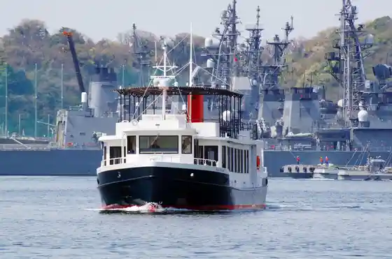
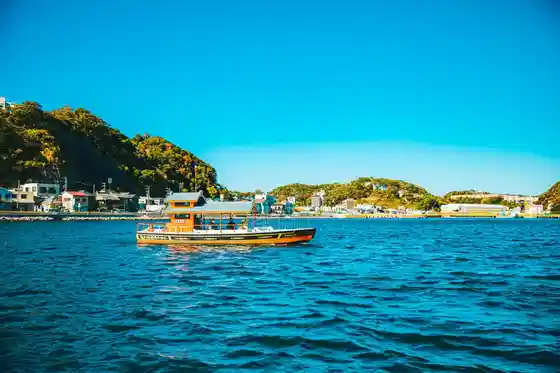
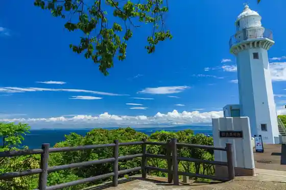
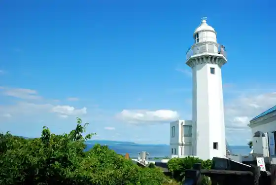

YOKOSUKA Gunko Meguri
Yokosuka, Kanagawa · 046-825-7144 · Official / source link

Uraga no Watashi
Yokosuka, Kanagawa · 046-825-7144 · Official / source link

Kannon Saki
Yokosuka, Kanagawa · 046-843-8316 · Official / source link

Kannon Saki Lighthouse
Yokosuka, Kanagawa · 046-841-0311 · Official / source link

Kinugasa Yama Park
Yokosuka, Kanagawa · 046-853-8523 · Official / source link
Tateishi Park
Yokosuka, Kanagawa · Official / source link
Tokyowan Ferii
Yokosuka, Kanagawa · 046-830-5622 · Official / source link
Hashiudo Suigenchi Park
Yokosuka, Kanagawa · 046-824-2171 · Official / source link
Hashiudo Shrine
Yokosuka, Kanagawa · 046-844-4122 · Official / source link
Kano Shrine
Yokosuka, Kanagawa · 046-841-5300 · Official / source link
Yokosuka Kurihama Hana no Kuni
Yokosuka, Kanagawa · 046-833-8282 · Official / source link
Tsukayama Park
Yokosuka, Kanagawa · 046-823-2439 · Official / source link
Verunii Park
Yokosuka, Kanagawa · 046-845-6660 · Official / source link
Ogata Nosambutsu Chokubai Tokoro
Yokosuka, Kanagawa · 046-856-8314 · Official / source link
Mujin Shima Saru Shima
Yokosuka, Kanagawa · 046-825-7144 · Official / source link
Yokosuka Dobu Ita Tori
Yokosuka, Kanagawa · Official / source link
Sekai Sandai Kinen Kan (Mikasa)
Yokosuka, Kanagawa · 046-822-5225 · Official / source link
Tan Shima Shrine
Yokosuka, Kanagawa · 046-822-8301 · Official / source link
Coast Enchi
Yokosuka, Kanagawa · 046-843-8316 · Official / source link
Hashiudo Kannonzaki Promenade (Hashiudo Kannonzaki Bodooku)
Yokosuka, Kanagawa · 046-822-8436 · Official / source link
Viewpoint Enchi
Yokosuka, Kanagawa · Official / source link
Kainzu Yokosuka Kurihama Mise
Yokosuka, Kanagawa · 046-837-8666 · Official / source link
Kurihama Hana no Kuni Puru
Yokosuka, Kanagawa · 046-835-7754 · Official / source link
Perii Koen to Memorial Museum
Yokosuka, Kanagawa · 046-834-7531 · Official / source link
Yokosuka Art Museum
Yokosuka, Kanagawa · Official / source link
Rinzai Shu Kencho Tera Ha Doku Sono Tera
Yokosuka, Kanagawa · Official / source link
Kurihama Minato
Yokosuka, Kanagawa · 046-835-8855 · Official / source link
Takatori Yama
Yokosuka, Kanagawa · 046-822-8333 · Official / source link
Magai Hotoke
Yokosuka, Kanagawa · 046-822-8333 · Official / source link
Tokyowan Feriitaminaru
Yokosuka, Kanagawa · 046-830-5622 · Official / source link
Kokudo 134 Go
Yokosuka, Kanagawa · Official / source link
Kayama Farm Ichigo Kari Experience
Yokosuka, Kanagawa · 090-3237-1583 · Official / source link
Umibe Baths Ryoshi Ryori Yokosuka
Yokosuka, Kanagawa · 046-838-4809 · Official / source link
Tatara Hama
Yokosuka, Kanagawa · 046-822-8294 · Official / source link
Kannon Saki Shizen Museum
Yokosuka, Kanagawa · 046-841-1533 · Official / source link
Kasuya no Mori Gendai Art Museum
Yokosuka, Kanagawa · 046-852-3030 · Official / source link
Maeda Kawa Promenade
Yokosuka, Kanagawa · 046-822-8510 · Official / source link
Umahori Coast
Yokosuka, Kanagawa · Official / source link
Kanagawa Prefectural Kannon Saki Park
Yokosuka, Kanagawa · 046-843-8316 · Official / source link
Verunii Memorial Museum
Yokosuka, Kanagawa · 046-824-1800 · Official / source link
Yoshiaki Yama Man Masa Tera
Yokosuka, Kanagawa · 046-836-2317 · Official / source link
Shiroaka Inari Shrine
Yokosuka, Kanagawa · Official / source link
Heiwa Chuo Park
Yokosuka, Kanagawa · 046-823-3222 · Official / source link
Sano Tennen Onsen no Bori Kumo
Yokosuka, Kanagawa · 046-851-2617 · Official / source link
Yokosuka Kaigun Kare Honpo
Yokosuka, Kanagawa · 046-829-1221 · Official / source link
Uraga Komyunitei Center Bunkan (Local History Museum)
Yokosuka, Kanagawa · 046-842-4121 · Official / source link
Mikasa Park
Yokosuka, Kanagawa · Official / source link
Rikugun Sambashi
Yokosuka, Kanagawa · 046-822-4022 · Official / source link
Wakamatsu Magatto
Yokosuka, Kanagawa · Official / source link
BEACH⇔PARK LIVING
Yokosuka, Kanagawa · 080-7019-022 · Official / source link
Tomyo Do
Yokosuka, Kanagawa · Official / source link
Yokosuka Kindai Isan Museum Teibodie Tei
Yokosuka, Kanagawa · 0468-27-7003 · Official / source link
Yokosuka Shobu Sono
Yokosuka, Kanagawa · 046-853-3688 · Official / source link
Taura Ume Village
Yokosuka, Kanagawa · 080-8144-5754 · Official / source link
Tenjin Shima Rinkai Shizen Kyoiku Sono (Kyu : Tenjin Shima)
Yokosuka, Kanagawa · 046-856-0717 · Official / source link
Haniibii
Yokosuka, Kanagawa · 0468-25-9096 · Official / source link
Resutoran TSUNAMI
Yokosuka, Kanagawa · 046-827-1949 · Official / source link
Gyoran Tei
Yokosuka, Kanagawa · 046-854-7470 · Official / source link
Tsukuihama Tourist Farm (Ichigo Kari Mikan Kari Satsumaimohori)
Yokosuka, Kanagawa · 046-857-9656 · Official / source link
Yokosuka Onsen Yu Raku Village
Yokosuka, Kanagawa · 046-845-1726 · Official / source link
Yokosuka Tennen Onsen Umibe Baths Kurihama Mise (Yokosuka)
Yokosuka, Kanagawa · 046-838-4126 · Official / source link
Otsu Suwa Shrine
Yokosuka, Kanagawa · 046-836-3570 · Official / source link
Tatchi Uotchi Aquarium Soreiyu no Oka
Yokosuka, Kanagawa · 046-857-2500 · Official / source link
Tondemi Yokosuka
Yokosuka, Kanagawa · 046-854-4531 · Official / source link
Mainabi JapanCup Yokosuka
Yokosuka, Kanagawa · Official / source link
Ichigo Yokosuka Potomagatto - YOKOSUKA PORT MARKET
Yokosuka, Kanagawa · 046-823-1015 · Official / source link
Nagahama Beach
Yokosuka, Kanagawa · 046-822-8301 · Official / source link
Jo Raku Tera
Yokosuka, Kanagawa · 046-856-8622 · Official / source link
Yokosuka Umikaze Park
Yokosuka, Kanagawa · 046-826-2899 · Official / source link
# Jihangun Yokosuka
Yokosuka, Kanagawa · 046-822-8533 · Official / source link
HONEYBEE
Yokosuka, Kanagawa · 0468-25-9096 · Official / source link
Merukyuru Yokosuka Bisutoro Burugonyu
Yokosuka, Kanagawa · 046-821-1111 · Official / source link
Yokosuka YY no Rimo no Fesuta 2026
Yokosuka, Kanagawa · Official / source link